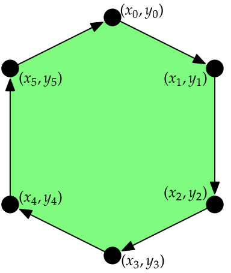
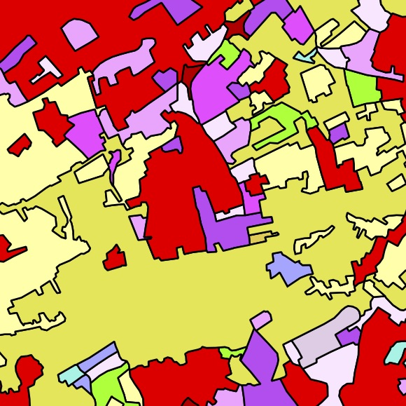
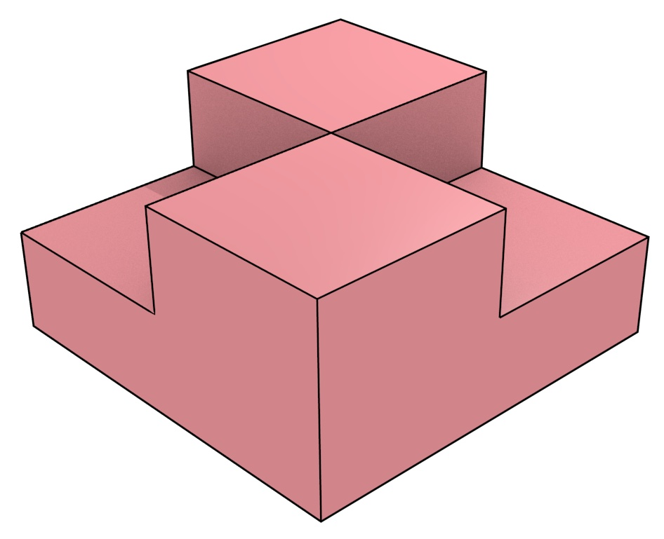
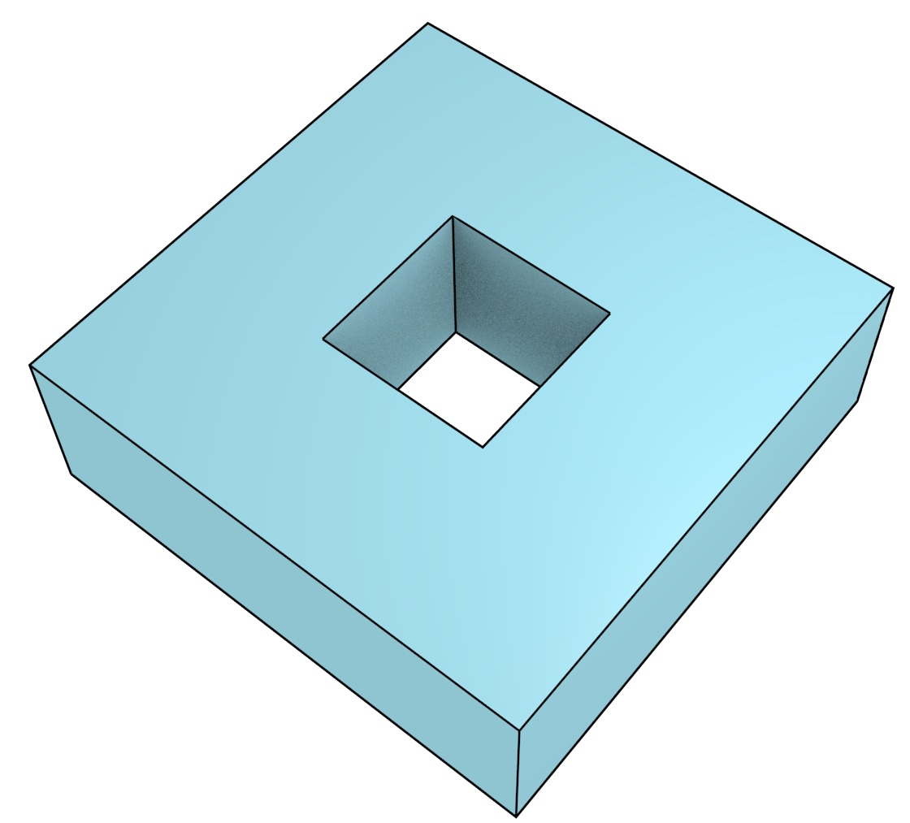

Spatial information describes the location of objects in space and the relationships between them. Within this thesis the emphasis is on geographic information as represented in a computer, which uses similar techniques but narrows this definition to information that is about the real world and at a human-to-Earth scale, using abstracted digital representations of real-world entities such as terrain, cities, roads and buildings. These entities and the relationships between them are defined using sets of interlinked computer primitives. Because of this, spatial information forms a necessary component of any computer model of the world as we know it at any significant level of detail.
The core of the research carried out in this thesis is concerned with geographic information systems (GIS)5, which produces tools to create, manipulate, analyse and visualise the digital objects that are inherent in these abstract representations of the world. Compared to other software categories that also allow us to model and manipulate objects that are represented geometrically, such as those used in computer-aided design (CAD) and geometric modelling, GIS tools stand out as being remarkably generic [Coppock and Rhind, 1991; Gold, 2006]. GIS are used equally to manually build objects by applying interactive drawing operations, to semi-automatically create full models from raw acquired data, to manage large collections of heterogeneous datasets and keep them up to date, or as interactive point-and-click environments to query the attributes of and perform simple calculations on existing datasets. Because of this genericity, GIS are expected to support a large number of different data formats from multiple sources and a wide variety of operations—all while solving problems in a mix of 2D and 3D and preserving the key characteristics of sometimes mutually incompatible computer representations. Rather than attempting to find the best solution on input fulfilling strict conditions, GIS tools are expected to make a best effort to obtain a good solution on the often invalid data that is available. This thesis follows this philosophy to a large extent.
For historical and practical reasons, current GIS mostly use simple 2D representations [ESRI, 2005; OGC, 2011], which are relatively easy to use and efficient, essentially consisting of sets of linked points, lines and polygons. Their efficiency is due to the fact that they can rely on many strong properties that are intrinsic to 2D objects. For example, one such property is that it is possible to define a natural order for the points around a closed polygonal curve, as shown in Figure 1.1, and so a polygon can be represented as a sequence of points that form a cycle along its boundary [Jordan, 1887], which are implicitly connected by line segments between each consecutive pair. Another such property is based on planar partitions—sets of polygons that form a subdivision of the plane—such as the one in Figure 1.2. Since in a planar partition there are two polygons incident to any edge (except those bordering the exterior), a complete planar partition can be stored easily as a set of edges where every edge is linked to two other edges and records the polygons that lie on each of its two sides [Peucker and Chrisman, 1975].
2D GIS are also able to take advantage of a great number of existing techniques that are based on 2D representations, such as those that are used to model the flow of water over a terrain [van Kreveld, 1997a] or to combine multiple maps into one (i.e. a map overlay) [de Berg et al., 1998, §2.3]. Moreover, these techniques have been developed and improved over decades, whereas any change in representation would require the development of new accompanying techniques in order to be truly useful.
The aforementioned advantages of 2D representations mean that even ‘3D’ GIS usually mimic the third dimension by using a so-called 2.5D structure, essentially treating the third dimension as a simple attribute that is attached to each object [Raper, 1989], or represent individual 3D objects only implicitly through the 2D surface that separates their interior from their exterior [Edmonds, 1960; Baumgart, 1975], as the cube in Figure 1.3, rather than as true solid objects. These solutions are compromises, as they limit the type of geometries that can be represented and complicate the storage of the relations that exist between 3D objects.
Another important consequence is that when non-spatial characteristics that have a strong link to space, such as time and scale, are integrated in a GIS, they are usually implemented using similar adaptations of 2D representations. For example, spatiotemporal GIS keep multiple representations of 2D structures [Armstrong, 1988], each at a different point in time, or a list of changes per object [Worboys, 1992a; Peuquet, 1994], while multi-scale datasets generally consist of independent datasets for each scale with some common identifiers that link objects between datasets [Friis-Christensen and Jensen, 2003; Stoter et al., 2014].
The use of 2D representations also limits the capabilities of GIS software, as the techniques that can be implemented on top of these 2D representations cannot make full use of the potential of 3D spatial information [Zlatanova, 2000, Ch. 3]. For instance, current GIS are largely unable to perform complex manipulations of 3D objects or to compute geometric operations between multiple 3D objects, forcing users to perform such functions in 3D modelling software. These examples are notable as equivalent functionality in 2D is widespread in 2D GIS and expected by its users.
A potential solution to solve the representation problems of 3D, spatio-temporal and multiscale data is opting out of further ad hoc adaptations of 2D structures. Instead, this thesis shows that it is possible to represent certain parametrisable characteristics as additional dimensions in the geometric sense, as shown in Figure 1.4, such that real-world (0D–3D) entities are modelled as higher-dimensional objects embedded in higher-dimensional space [van Oosterom and Stoter, 2010]. A building existing over a time span and stored at a variety of scales on a computer could thus be represented as a single 5D object.
The higher-dimensional geographic information modelling approach is well grounded in long-standing mathematical theories, such as the setting of coordinates to space [Descartes, 1637], and theories of higher-dimensional geometry [Riemann, 1868] and topology [Poincaré, 1895]. It also opens the door for new, more powerful techniques and practical applications. For example, these \(n\)-dimensional representations could be used to ensure that an object is consistent along all dimensions (e.g. a building at different points in time or levels of detail), or to analyse its relations to other objects along all dimensions (e.g. whether two moving objects were ever adjacent).
There is a large body of related work on the representation of abstract \(n\)-dimensional objects in mathematics and computer science [Brisson, 1993; Lienhardt, 1994], as well as a few instances of work on its application to GIS [Karimipour et al., 2010]. However, by and large higher-dimensional representations remain unanalysed in the context of geographic information. For instance, it is necessary to see how abstract representations can be made fit for use with real-world objects, which have aspects that are difficult to handle, e.g. certain kinds of geometries (Figure 1.5), holes (Figure 1.6) and complex semantics. Additionally, making this approach attractive in practice requires the development of high-level techniques to construct, analyse and visualise higher-dimensional geographic objects. Finally, there are significant technical issues involved in the realisation of these representations and techniques into a computer implementation. All of these aspects, which in short encompass concepts, representations, operations and visualisation, are tackled in this thesis.
1.1 Research objective and scope
In order to determine whether the higher-dimensional modelling of geographic information is worthwhile, and if so, the conditions under which it makes sense to follow it, it is necessary to first gain a greater understanding of the entire modelling process in higher dimensions as well as its technical consequences. The main aim of this thesis is therefore to gain this understanding by realising the fundamental aspects of a higher-dimensional Geographic Information System, including the development of the necessary modelling concepts that are analogous to familiar modelling concepts in 2D/3D GIS, the use of appropriate higher-dimensional representations, and the development of simple higher-dimensional operations. While not every aspect of a higher-dimensional GIS can be fully developed within the timeframe allotted for this thesis, prototype-level working software is created whenever possible and tested using real-world higher-dimensional datasets7. In this sense, this thesis does not intend to prove that the higher-dimensional spatial modelling approach is better or worse than existing approaches, but instead to highlight its advantages and disadvantages so as to better evaluate it for future applications.
1.2 Structure of this thesis
This thesis comprises two main parts, each of which contains a few chapters and which respectively cover methods to solve problems inherent in: (i) representing objects in arbitrary dimensions, and (ii) creating and manipulating such objects. After these, there are some independent chapters that fall outside the two parts, covering practical aspects such as the processing of real-world (invalid) data, implementation details and how the results of all chapters come together. All chapters are described in detail below.
Part I Representing geographic information
- Chapter 2 introduces the mathematical concepts and background behind spatial data modelling.
- Chapter 3 describes and analyses the state of the art in the 2D and 3D modelling of space, time, scale and attributes. It concludes by listing some of the shortcomings of current approaches.
- Chapter 4 presents the higher-dimensional modelling paradigm that is the basis of this thesis, which aims to solve many of the problems alluded to in Chapter 3. It also describes and evaluates the higher-dimensional representations that can be used in order to realise this approach, which take the form of \(n\)-dimensional data models and structures.
Part II Constructing and manipulating objects
- Chapter 5 presents a few fundamental operations for some of the data structures described in Chapter 4. These are used in order to build the higher level operations described in the other chapters within Part I.
- Chapter 6 describes \(n\)-dimensional extrusion, an extension of the well-known 2D to 3D extrusion operator in GIS. It can be used to generate simple prism-shaped \(n\)-dimensional objects from an \((n-1)\)-dimensional space partition by assigning to each \((n-1)\)-dimensional object a range along which it exists.
- Chapter 7 describes incremental construction, an operation which is able to generate arbitrary \(n\)-dimensional objects based on defining their \((n-1)\)-dimensional boundary. It is equivalent to the generation of the topological relationships that exist between a set of \((n-1)\)-dimensional objects.
- Chapter 8 shows how a higher level construction operator that links a series of 2D or 3D models can be created. This enables the construction of 4D models from real-world 3D city models covering the same region.
- Chapter 9 explains how 2D and 3D information can be extracted from a higher-dimensional representation by selecting appropriate portions of the data (e.g. cross-sections) and projecting it to 2D/3D space.
- Chapter 10 explains the main data validation and repair techniques that are used to create 2D/3D/\(n\)D objects and space partitions out of real-world GIS datasets, which often have defects that impede their usage. By obtaining clean geometric models, these techniques enable the use of the higher-dimensional modelling approach in practice.
- Chapter 11 concludes this thesis by explaining the achievements of this PhD project and highlighting the main challenges to further develop a higher-dimensional GIS. It contains an outlook on how higher-dimensional modelling can be used in GIS as well as some suggestions for future work.
- Appendix A describes the most relevant implementation details concerning the representations and operations from the previous chapters, such as the use of various software libraries, robust geometric operations and programming techniques.
- Appendix B contains a short dictionary of terms for higher-dimensional GIS. As the terminology used in 2D GIS, 3D GIS, CAD, geometric modelling and other related fields can be different and is often used inconsistently and rather loosely, the appendix is intended for use as a general reference and for the better understanding of the thesis.
5. Within this thesis, I always use ‘GIS’ and not ‘GISs’. This is partly because of aesthetics (GISs reads badly and hears worse), but also because I would argue that current GIS are not really systems but disparate collections of methods, tools and processes. As such, when I write about GIS I rarely refer to systems and most often use the word as a modifier rather than a noun.↩

Figure 1.1: A polygon as a cycle of points↩

Figure 1.2: The polygons in the CORINE6 dataset in the area around Delft [CEC, 1995]↩
6. http://www.eea.europa.eu/publications/COR0-landcover ↩

Figure 1.3: A cube represented as the 6 square faces that bound it↩

Figure 1.4: Five dimensions based on 3D space, time and scale↩

Figure 1.5: This non-manifold shape cannot be handled properly in many representations.↩

Figure 1.6: The top and bottom faces of this torus have holes in them.↩
7. In this instance, real-world does not imply tackling all the problems inherent in using the entirety of the very large, complex and invalid datasets that are currently available. Due to the experimental nature of this thesis, small subsets of these real-world datasets that showcase specific problems are necessarily chosen. ↩